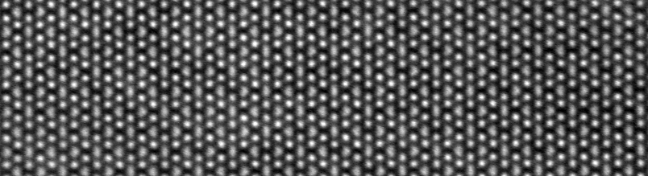
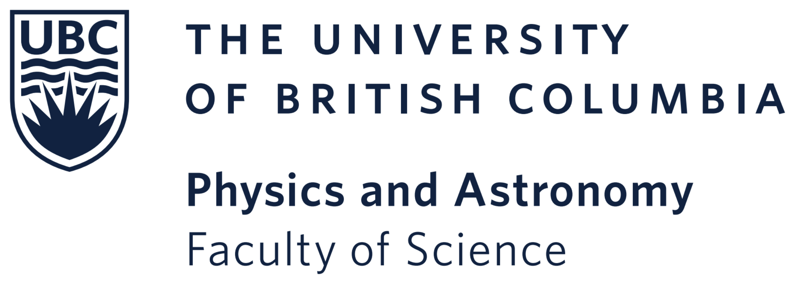

Our lab develops cryogenic electron microscopy and in situ capabilities to visualize, understand and manipulate quantum materials at the atomic scale.
We are located at the Stewart Blusson Quantum Matter Institute and Department of Physics & Astronomy at the University of British Columbia in Vancouver, BC, Canada.
We use scanning transmission electron microscopes (STEM) with high-energy-resolution electron energy loss spectroscopy (EELS) to achieve atomic-scale insights into structure, bonding and electron interactions in quantum materials. We incorporate ultra-stable cryogenic sample holders and in situ control knobs to simulataneously manipulate and visualize emergent phases in strongly correlated materials.

Atomic-resolution cryo-STEM of low temperature trimers in a 2D material
A Research Associate/Staff Scientist position in High Resolution Microscopy and Spectroscopy is available at UBC's Quantum Matter Institute.
hiringA cryo-STEM study reveals inverse melting in Zr-doped BaTiO₃, published in Physical Review Letters.
publicationCryogenic STEM reveals the atomic-scale mechanism disrupting charge-ordered states in a manganite. Published in Physical Review X.
publicationOur updated prototype shows sub-Angstrom HRTEM imaging, low drift, and millikelvin-level temperature stability.
instrument